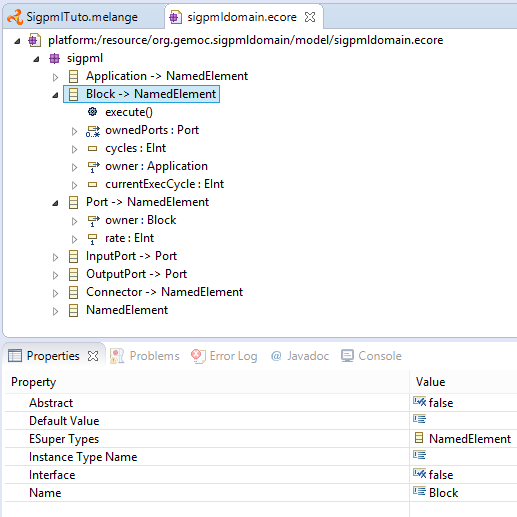

The DSA definition includes two steps : - adding Execution Data and Execution Function in the Ecore model. - creating aspects to weave with the Ecore model in Kermeta3
So first, Execution Data and Execution Function definitions are added to the domain model of SigPMLTuto ecore file. We extend the SigPML metamodel by adding one function execute() and two varaiables cycles and currentExecCycle in the Block class. So the block instances run the function execute() when the value of currentExecCycle is lower than the value of cycles.
The function and variables are added with the Ecore reflexive editor. In this tutorial, function and variables are provided in the initial ecore model.
Execution Function in the SigPML metamodel. 
The creation of the DSA project is on a click right menu on the Melange file "Create DSA Project for language "→select the name of the xDSML language (SigPMLTuto language).
DSA project creation. 
This project includes aspect definition which is weaved with the Java code corresponding the SigPML ecore model. The file name and classes suffix are proposed in the DSA wizard of the next figure.
DSA project wizard. 
The resulted DSA project is a k3dsa project with a sigpmlAspects.xtend file in the package org.gemoc.sample.xsigpml.k3dsa. This file contains the aspects that we want to add to the necessary classes in our case only the Block one. The resulting project is showed in the next figure.
K3dsa project with the aspect code provided in the next section. 
In this tutorial, the implementation of the functions is simple. The execute function increments the currentExecCycle of a block until its value is inferior to the cycles value.
The source code is available through Kermeta 3 aspects,tabsize=4 and showed below
package sigpml.aspects
import fr.inria.diverse.k3.al.annotationprocessor.Aspect
import sigpml.Application
import sigpml.Block
import sigpml.Connector
@Aspect(className=Application)
class ApplicationAspect {
}
@Aspect(className=Block)
class BlockAspect {
public int currentExecCycle = 0
def public void execute() {
if ( _self.currentExecCycle < _self.cycles )
_self.currentExecCycle = _self.currentExecCycle + 1
else
_self.currentExecCycle = 0
println(_self.name + "\n execute (" + _self.currentExecCycle + ")" )
}
}
@Aspect(className=Connector)
class ConnectorAspect {
}You must remove the aspects reference in the Melange file.